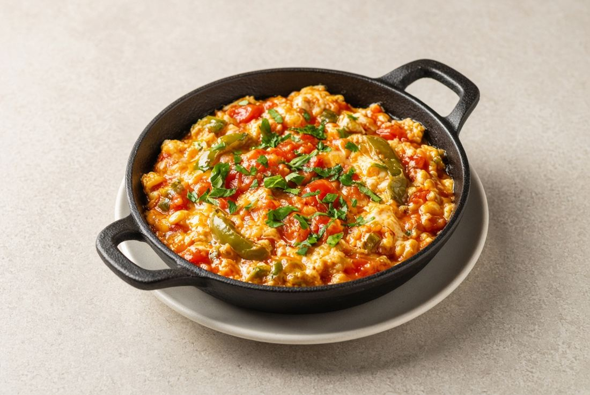

Menemen
Domates, biber, yumurta
250 ₺
Ege’nin toz mavisinde, Huzur Sokak’ta sakin bir masa. Kahvaltı, soslu tavuk, ızgara ve tatlı — hepsi aynı yerde.
Menüyü görMoon light cafe, Türkmen mahallesinde Huzur Sokak 14/A’da. Merkezden Deniz Bank’ın karşısındaki sokağa girince, Dent Island’dan sola dönünce karşına çıkar.
Kuşadası’nda fiyat-kalite dengesiyle anılan bir yer: soslu tavuklar, ızgara, kahvaltı ve makarna. Ekstra soslar ücretlidir.